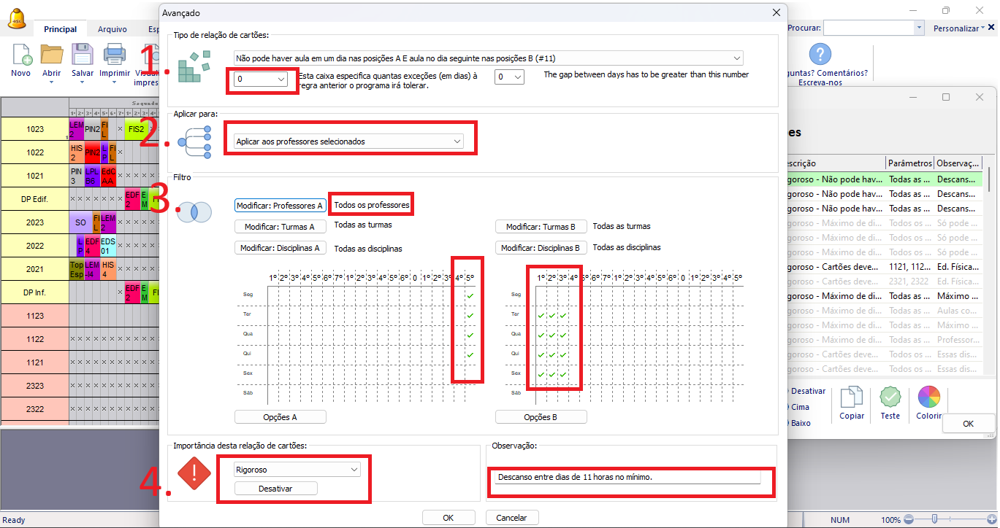

Detalhes do post:
Intervalo Mínimo entre Dias de Aula:
Descrição:Os professores precisam ter um interstício de 11 horas no mínimo da jornada de trabalho de um dia para o outro
Para resolver esse tipo de situação devemos restringir a colocação dos cartões das aulas usando as relações entre cartões avançados, cadastrando 3 relações entre cartões diferentes que devem trabalhar em conjunto.
1- Selecionar o tipo de relação “Não pode haver aulas em um dia nas posições A e aula no dia seguinte nas posições B(#11)” e em seguida na caixa de texto abaixo especificar o número de exceções desta regra que o programa irá tolerar. Como essa é uma restrição obrigatória por lei, coloque 0, pois não poderá haver exceções.
2- Selecionar a opção “Aplicar aos professores selecionados”, visto que o intervalo mínimo atinge apenas os docentes.
Siga o passo a passo até esse ponto para as 3 relações, após isso os passos a seguir devem ser utilizados individualmente, um para cada uma das 3 relações.
3.1- Utilize o filtro “Modificar Professores” selecionando todos professores, levando em conta que o interstício mínimo é um direito de todos os docentes.
Selecionar no Quadro de horários A o último horário dos dias da semana (exceto da sexta-feira, considerando que sábado não é um dia letivo), e no quadro B os 3 primeiros horários dos dias da semana (exceto da segunda feira, considerando que Domingo não é um dia letivo); sendo assim considerando que o último horário (no quadro A) termine às 22h25min, havendo aula neste período no próximo dia só poderia começar do quarto horário em diante, às 09h30min.
obs: adaptar essa parte para se encaixar nos horários da sua instituição.
3.2- Utilize o filtro “Modificar Professores” selecionando todos professores, levando em conta que o interstício mínimo é um direito de todos os docentes.
Selecionar no Quadro de horários A os 3 últimos horários dos dias da semana (exceto da sexta-feira, considerando que sábado não é um dia letivo), e no quadro B o primeiro horário dos dias da semana (exceto da segunda feira, considerando que Domingo não é um dia letivo); sendo assim considerando que o primeiro dos 3 últimos horários ( no quadro A) termine às 20h45min, havendo aula neste período no próximo dia só poderia começar do segundo horário em diante, às 07h45min.
obs: adaptar essa parte para se encaixar nos horários da sua instituição.
3.3- Utilize o filtro “Modificar Professores” selecionando todos professores, levando em conta que o interstício mínimo é um direito de todos os docentes.
Selecionar no Quadro de horários A os 2 últimos horários dos dias da semana (exceto da sexta-feira, considerando que sábado não é um dia letivo), e no quadro B os 3 primeiros horários dos dias da semana (exceto da segunda feira, considerando que Domingo não é um dia letivo); sendo assim considerando que o primeiro dos 2 últimos horários ( no quadro A) termine às 21h40min, havendo aula neste período no próximo dia só poderia começar do quarto horário em diante, às 09h30min.
obs: adaptar essa parte para se encaixar nos horários da sua instituição.
4- Selecione a importância das 3 relações sendo “RIGOROSO”, pois se trata de uma lei e deve ser atendida em todas as situações.
Também escreva uma observação que facilite a identificação da restrição e explique seu objetivo.
Clique em “ok” no canto inferior para salvar a relação.